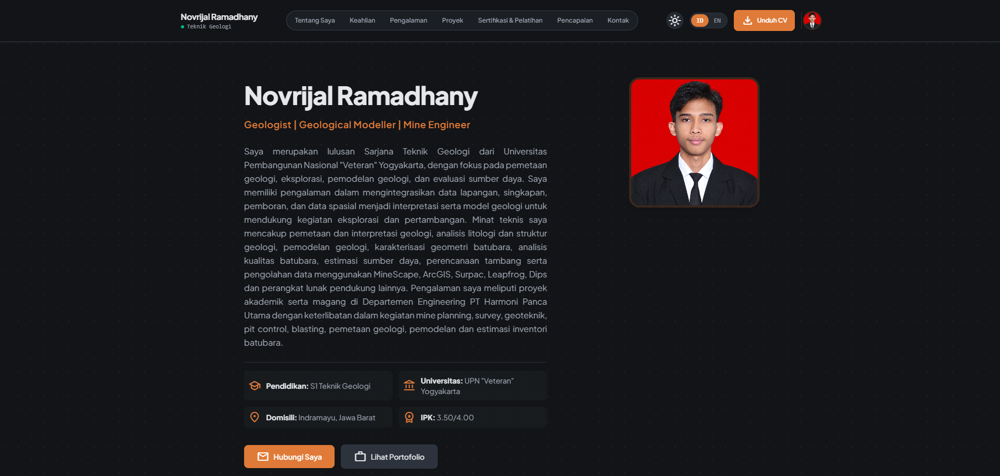
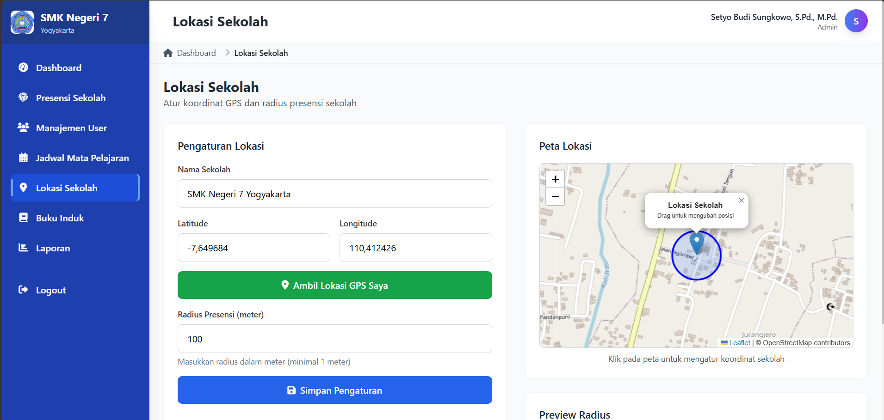
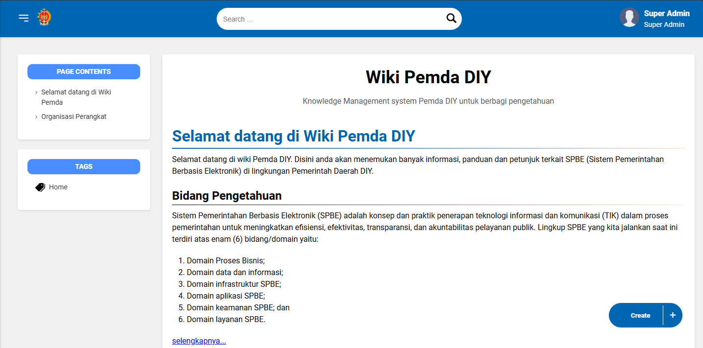
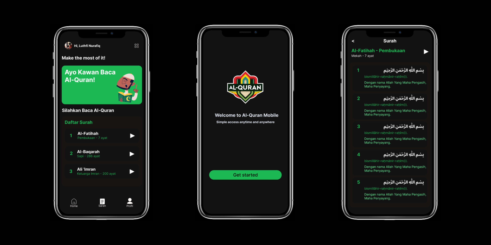
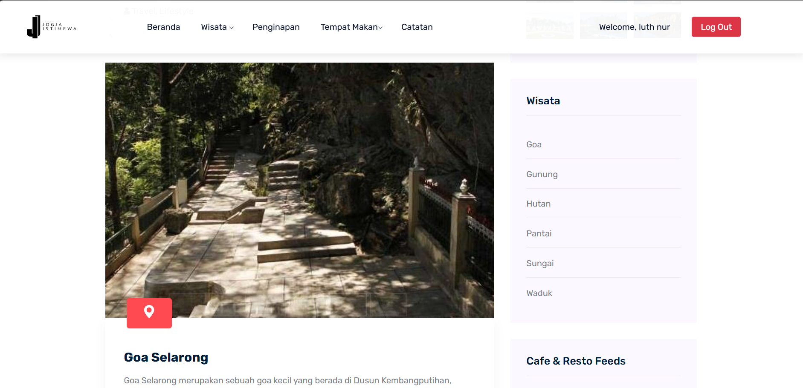

S1 Sistem Informasi — UPNVY
Saya adalah seorang fresh graduate S1 Sistem Informasi dari UPN "Veteran" Yogyakarta, dengan passion di bidang pengembangan web, mobile, dan backend.
Saya senang membangun produk digital yang tidak hanya fungsional, tetapi juga memberikan pengalaman pengguna yang menyenangkan.
Membangun antarmuka web yang dinamis, responsif, dan interaktif dengan ekosistem React modern.
Mengembangkan backend dan REST API yang cepat, efisien, dan scalable menggunakan Go.
Membuat aplikasi mobile cross-platform untuk Android & iOS dari satu codebase.
Merancang dan mengelola database relasional maupun non-relasional untuk berbagai kebutuhan.
Membangun backend ringan dan REST API dengan Python Flask.
Membangun aplikasi web modern dengan rendering fleksibel dan pengalaman pengguna yang cepat.
Mendesain antarmuka yang intuitif dan estetis sebelum diimplementasikan ke kode.

Platform portofolio web interaktif untuk profesional teknik geologi yang dilengkapi dashboard admin, viewer dokumen presentasi teknis (PPT/PDF), dukungan bilingual (ID/EN), serta integrasi cloud storage.

Sistem absensi siswa SMK berbasis web dengan validasi lokasi menggunakan algoritma Haversine. Dibangun untuk SMK Negeri 7 Yogyakarta.

Website Wiki Pemda DIY yang dibuat menggunakan React untuk tampilan antarmuka dan Golang untuk backend API yang cepat dan terstruktur.

Aplikasi mobile Al-Quran dengan tampilan sederhana untuk membaca surah dan ayat. Dibuat menggunakan Flutter dan didukung database Firebase.

Website wisata Jogja yang menampilkan informasi destinasi, rekomendasi tempat menarik, dan pengalaman eksplorasi yang lebih mudah bagi pengguna.
Saya terbuka untuk peluang kerja, proyek freelance, atau sekadar ngobrol soal teknologi. Jangan ragu untuk menghubungi saya!